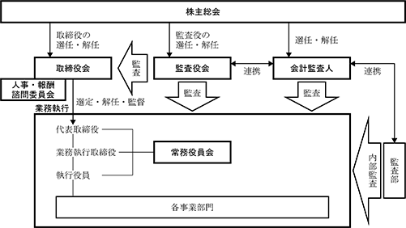

該当事項はありません。
該当事項はありません。
③ 【その他の新株予約権等の状況】
該当事項はありません。
該当事項はありません。
（注）平成25年４月26日開催の定時株主総会において、10株を１株とする株式併合が承認され、当該株式併合に伴い定款の一部変更が行われた結果、発行済株式総数は平成25年６月１日より2,821千株となっております。
令和６年１月31日現在
(注) 自己株式32,817株は「個人その他」に328単元を、「単元未満株式の状況」に17株を含めて記載しております。
令和６年１月31日現在
(注) １ 日本マスタートラスト信託銀行株式会社(近畿日本鉄道株式会社退職給付信託口)名義の株式は、日本マスタートラスト信託銀行株式会社と三菱ＵＦＪ信託銀行株式会社との共同受託に基づく退職給付信託で、近畿日本鉄道株式会社の信託財産であります。
２ 当社は、自己株式32千株を所有しており、上記大株主からは除外しております。
３ 「所有株式数(千株)」欄は、千株未満を切り捨てて記載しております。また、発行済株式(自己株式を除く。)の総数に対する所有株式数の割合は、小数点以下第３位を四捨五入しております。
令和６年１月31日現在
(注) 「単元未満株式」欄の普通株式には、当社所有の自己株式17株が含まれております。
令和６年１月31日現在
該当事項はありません。
該当事項はありません。
(注) 当期間における取得自己株式には、令和６年４月１日から有価証券報告書提出日までの単元未満株式の買取りによる株式数は含めておりません。
(注) 当期間における保有自己株式には、令和６年４月１日から有価証券報告書提出日までの単元未満株式の買取り及び買増請求による株式数は含めておりません。
当社は、企業体質の強化及び将来の事業展開等に必要な内部留保を確保しつつ、安定配当を継続維持することを基本方針としております。
また、期末日を基準とした株主総会決議による年１回の配当を継続していく所存であります。
この方針に基づき、当期の配当については、１株当たり10円の配当を行うことに決定いたしました。
内部留保資金については、経営基盤の強化と事業の拡大を図るため、効率的な設備投資等に充てていきたいと考えております。
なお、当社は取締役会の決議により、毎年７月31日を基準日として、中間配当を行うことができる旨を定款に定めております。
(注) 基準日が当事業年度に属する剰余金の配当は以下のとおりであります。
① コーポレート・ガバナンスに関する基本的な考え方
当社は、継続的に企業価値を向上させるためには、コーポレート・ガバナンスの強化が必要であると認識しており、法令・企業倫理の遵守、経営の意思決定の迅速化、経営の監督機能の強化及び経営の透明性の確保を重要な課題と考えております。
② 企業統治の体制の概要及び当該体制を採用する理由
当社は取締役会、監査役会を設置しており、会社経営について経験豊かで当社事業分野にも造詣が深い社外取締役が業務執行を監視し、２名の社外監査役を構成員とする監査役会と内部監査部門である監査部が緊密に連携して監査を実施することにより、業務の適正を確保することができるものと考えております。
a.取締役会
当社の取締役会は、経営上の意思決定を機動的に行うため、取締役６名の少人数で構成しており、うち２名は社外取締役であり、独立役員の要件を充たしております。取締役会は、重要な業務執行を決定するとともに、内部統制の整備・運用状況を含む業務執行状況の報告を定期的に受け、業務執行取締役及び執行役員による業務執行を監督しております。
（構成員の氏名）
取締役社長 作田憲彦〈議長〉、専務取締役 北悦治、常務取締役 山野貴生、
取締役(社外) 網本浩幸、同 河内一友、取締役 都司尚、
監査役(常勤)(社外) 門山龍彦、監査役(社外) 長田宏、監査役 中村哲夫
b.監査役会
当社の監査役会は、３名の監査役で構成されており、このうち２名は社外監査役であり、監査の厳正、充実を図っております。監査役会は、監査の基本方針等を決定するとともに、各監査役が実施した監査の結果を報告し、監査役間で情報共有及び意見交換を行っております。
（構成員の氏名）
監査役(常勤)(社外) 門山龍彦〈議長〉、監査役(社外) 長田宏、監査役 中村哲夫
c.人事・報酬諮問委員会
取締役会の諮問機関として、取締役会の構成員のうち、取締役社長及び社外取締役両名で構成する人事・報酬諮問委員会を設置しており、取締役の人事・報酬等について審議を行い、取締役会の決議に資することとしております。
（構成員の氏名）
取締役社長 作田憲彦〈議長〉、取締役(社外) 網本浩幸、同 河内一友
d.常務役員会
当社の常務役員会は、常勤の取締役及び執行役員で構成されており、業務執行に関する重要な案件を審議決定しております。
（構成員の氏名）
取締役社長 作田憲彦〈議長〉、専務取締役 北悦治、常務取締役 山野貴生、
常務執行役員 藤下修、執行役員 水野雄三、同 濵松勇治
これらの体制の概要は、下図のとおりであります。

③ 内部統制システム（リスク管理体制を含む。）の整備状況
当社は、会社法第362条第４項第６号に基づき、当社取締役の職務の執行が法令及び定款に適合することを確保するための体制その他当社の業務の適正を確保するために必要な体制を次のとおり整備することを取締役会において決議しております。なお、この内容については必要が生じる都度、見直しを実施しております。
Ⅰ 取締役及び使用人の職務の執行が法令及び定款に適合することを確保するための体制
(ⅰ) 取締役及び使用人が、法令・定款及び社会規範に適合した行動をとるための具体的指標として、「企業行動規範」及び「きんえい倫理規定」を制定し、これを周知するための措置をとる。
(ⅱ) 法令及び企業倫理に則った企業行動を推進するため、「法令倫理委員会」を設置するとともに、各部に法令倫理責任者及び法令倫理担当者を置く。
(ⅲ) 使用人が法令・企業倫理や社内規程に反する行為を発見した場合に、通報や相談を行うことができる「法令倫理相談制度」を設ける。
(ⅳ) 法令、社内諸規則に定めるところに従い、業務が適切に遂行されているか否かを検証するため、内部監査部門が監査規程に基づき業務・能率監査等の内部監査を実施する。
(ⅴ) 反社会的勢力との関係については、これを一切持たず、不当な要求には毅然とした対応をとることとし、その旨を「企業行動規範」及び「きんえい倫理規定」に明示する。
(ⅵ) 金融商品取引法に基づく財務報告に係る内部統制については、財務報告を法令等に従って適正に作成することの重要性を十分に認識し、必要な体制等を適切に整備、運用する。
Ⅱ 取締役の職務の執行に係る情報の保存及び管理に関する体制
情報の保存及び管理に関し「文書取扱規程」を整備し、同規程に従い、取締役の職務執行に係る情報を文書または電磁的媒体（以下「文書等」という。）に記録し、保存する。取締役及び監査役は、常時これらの文書等を閲覧できる体制を整える。
Ⅲ 損失の危険の管理に関する規程その他の体制
(ⅰ) 事業等のリスクを適切に管理するため、包括的規定として「リスク管理規程」を制定するとともに、リスクを含む重要な案件については、必要に応じて取締役会並びに常勤の役員及び執行役員で構成される常務役員会において審議を行う。
(ⅱ) 安全に関する事項、法令・企業倫理の遵守に関する事項など特に重要と判断したリスクの管理については、全体のリスク管理体制に加えて、マニュアルの制定など個別の管理体制も整備する。
Ⅳ 取締役の職務の執行が効率的に行われることを確保するための体制
(ⅰ) 取締役会の決議により、適正な業務組織と分掌事項を設定し、業務執行取締役及び執行役員の担当業務を明確に定める。また、業務執行を統轄する社長の下、相互牽制の観点にも配慮しつつ、一定の基準により決裁権限を業務執行取締役及び執行役員に委譲する。
(ⅱ) 業務執行取締役及び執行役員間の情報の共有と効率的な意思決定を図るため、常務役員会を常設する。
(ⅲ) 部門別業績管理の導入により、社長が定める全社目標に基づく事業所別月別収支予算を作成し、常勤役員、執行役員及び部長で構成される部長会において、その達成度をチェックすることにより、目標達成の確度を高め、全社的な業務の効率化を図る。
(ⅳ) 業務改善の促進や経営効率の向上等に資する観点から内部監査部門による内部監査を実施する。
Ⅴ 企業集団における業務の適正を確保するための体制
当社と親会社との間での取引の公正を確保するため、通例的でないと判断できる取引については、親会社以外の株主の利益に配慮し、取締役会において慎重に検討を行う。
Ⅵ 監査役の監査に関する体制
(ⅰ) 監査役が必要とする場合、監査役の職務を補助する使用人を置く。
(ⅱ) 監査役の職務を補助する使用人は、取締役の指揮下から外れて監査役の指揮を受け、その人事異動、評価、賃金の改定等については、常勤監査役の同意を得た上で決定する。
(ⅲ) 監査役の職務を補助する使用人は、取締役及びその指揮下にある使用人を介さず、監査役から直接指示を受け、また監査役に直接報告を行う。
(ⅳ) 取締役及び使用人は、監査役に対して、業務執行に係る文書その他の重要な文書を回付するとともに、法定事項のほか、全社的に重要な影響を及ぼす事項を速やかに報告する。また、監査役が職務の必要上報告及び調査を要請した場合には、積極的にこれに協力する。さらに、業務執行取締役及び執行役員は、常勤監査役と定期的に面談し、業務に関する報告等を行う。
このほか、内部監査部門は、内部監査の結果を定期的に監査役に報告する。また、「法令倫理相談制度」において、通報内容が監査役の職務の執行に必要と認められる場合及び通報者が監査役に通知を希望する場合は、速やかに監査役に報告する。
(ⅴ) 取締役及び使用人が監査役に報告を行ったことを理由として、いかなる不利益な扱いも行わないものとする。
(ⅵ) 監査役が、その職務の執行について、費用の前払い、または支出した費用の償還を請求した場合は、監査役の職務の執行に不要なものであることが明白なときを除き、速やかにその請求に応じる。
(ⅶ) 常勤の監査役は、常務役員会等の会議体に出席し、意見を述べることができ、監査役会は、必要に応じて取締役、使用人及び会計監査人その他の関係者の出席を求めることができる。
④ 企業統治に関するその他の事項
a.社外取締役との間で締結している責任限定契約の内容の概要
当社は、会社法第427条第１項及び定款第27条の規定に基づき、社外取締役網本浩幸及び社外取締役河内一友との間で、会社法第423条第１項の賠償責任を限定する契約を締結しております。当該契約に基づく賠償責任の限度額は、法令が定める額としております。
b.役員等賠償責任保険契約の内容の概要
当社は、会社法第430条の３第１項に規定する役員等賠償責任保険契約を締結しております。当該保険契約の被保険者の範囲は、当社の取締役、監査役及び執行役員であり、保険契約の内容の概要は、次のとおりであります。
(ⅰ)被保険者の実質的な保険料負担割合
保険料は特約部分を含め全額会社負担としており、被保険者の実質的な保険料負担はない。
(ⅱ)填補の対象となる保険事故の概要
会社の役員としての業務につき行った行為または不作為に起因して、保険期間中に株主または第三者から損害賠償請求がなされた場合に、これによって被保険者が被る損害(損害賠償請求がなされるおそれがある状況において、これに対応するために要する費用を含む。)を填補する。
(ⅲ)役員等の職務執行の適正性が損なわれないための措置
保険契約において、私的な利益または便宜の供与に起因するもの、犯罪行為または違法であることを認識しながら行った行為に起因するものなどは、免責事由として損害を填補する対象としないこととしている。
c.取締役の選任の決議要件
当社は、「取締役の選任決議は、議決権を行使することができる株主の議決権の３分の１以上を有する株主が出席し、その議決権の過半数をもって行う。」旨を、また、「取締役の選任決議は、累積投票によらないものとする。」旨を定款に定めております。
当社は、株主への機動的な利益還元を行うため、取締役会の決議により、毎年７月31日を基準日として、中間配当を行うことができる旨を定款に定めております。
当社は、「会社法第309条第２項に定める決議は、議決権を行使することができる株主の議決権の３分の１以上を有する株主が出席し、その議決権の３分の２以上をもって行う。」旨を定款に定めております。
これは、株主総会の円滑な運営を行うことを目的とするものであります。
⑤ 取締役会の活動状況
当事業年度において当社は取締役会を７回開催しており、個々の取締役の出席状況については次のとおりであります。当事業年度中の取締役会においてアポロビルの設備更新等、あべのアポロシネマの施設リニューアル等の重要な業務執行及びサステナビリティ方針の制定等について審議、検討を行いました。
（注１）田中耕造氏は、第126期定時株主総会（令和５年４月26日）終結の時をもって取締役を退任しておりますので、退任までの期間に開催された取締役会の出席状況を記載しております。
（注２）山野貴生氏は、第126期定時株主総会（令和５年４月26日）において取締役に就任しておりますので、就任後に開催された取締役会の出席状況を記載しております。
⑥ 人事・報酬諮問委員会の活動状況
当事業年度において当社は人事・報酬諮問委員会を３回開催しており、個々の委員の出席状況については次のとおりであります。当事業年度中の人事・報酬諮問委員会において取締役、執行役員の人事及び取締役の報酬について審議、検討を行いました。
（注１）田中耕造氏は、第126期定時株主総会（令和５年４月26日）終結までの期間に開催された人事・報酬諮問委員会の出席状況を記載しております。
（注２）作田憲彦氏は、第126期定時株主総会（令和５年４月26日）終結後の期間に開催された人事・報酬諮問委員会の出席状況を記載しております。
① 役員一覧
男性
(注) １ 取締役網本浩幸及び河内一友は、社外取締役であります。
２ 監査役門山龍彦及び長田宏は、社外監査役であります。
３ 取締役の任期は、令和６年１月期に係る定時株主総会終結の時から１年以内に終了する事業年度のうち最終のものに係る定時株主総会終結の時までであります。
４ 監査役の任期は、令和６年１月期に係る定時株主総会終結の時から４年以内に終了する事業年度のうち最終のものに係る定時株主総会終結の時までであります。
５ 当社は、法令に定める監査役の員数を欠くことになる場合に備え、会社法第329条第３項に定める補欠監査役１名を選任しております。
補欠監査役の略歴は次のとおりであります。
（注）平野雅大は監査役（常勤）門山龍彦、監査役長田宏及び中村哲夫の補欠者であります。
② 社外役員の状況
当社の取締役のうち２名が社外取締役であります。社外取締役網本浩幸は法律の専門家としての卓越した知識と経験を活かし、独立の立場から当社の経営を監督できることから、また社外取締役河内一友は経済人としての豊富な経験と高い見識を持つほか、関西地区を事業基盤とする放送会社の経営者として示される意見を当社の事業に反映できることから、それぞれ社外取締役として適任と判断し、経営監督機能の強化に取り組んでおります。また、監査役は２名を社外監査役として選任し、監査の厳正、充実を図っております。社外監査役門山龍彦は近畿日本鉄道株式会社（現 近鉄グループホールディングス株式会社）及び株式会社近鉄ホテルシステムズ（現 株式会社近鉄・都ホテルズ）において豊富な企業実務の知識と経験を持ち、当社においても常勤の監査役としてその職責を十分に果たしてきたことから、また社外監査役長田宏は近畿日本鉄道株式会社（現 近鉄グループホールディングス株式会社）において監査役室部長として豊富な監査実務の知識と経験を持ち、近鉄ビルサービス株式会社（現 近鉄ファシリティーズ株式会社）及び株式会社近鉄百貨店においても監査役としてその職責を十分に果たしてきたことから、それぞれ社外監査役として適任であると判断しております。
社外監査役門山龍彦及び社外監査役長田宏は近鉄グループホールディングス株式会社の元社員であります。当社は近鉄グループの資金有効活用のために同社へ余剰資金の貸付を行っておりますが、これらの取引はＣＭＳ（キャッシュ・マネジメント・システム）にかかるものであり、貸付金利息は市場金利を勘案して合理的に決定しております。従って、これらの取引は公正、妥当な取引条件により実行されており、当社はこれらの取引により相応の利益を得ていますので、取締役会は、これらの取引はいずれも当社の利益を害さないと判断しております。社外取締役との特別な利害関係はありません。
当社は社外取締役及び社外監査役の選任における独立性に関する基準又は方針はありませんが、過去に当社の取締役及び使用人でなかったものの中から、豊富な知識と経験を有し、客観的立場から経営を監視できる人材で、一般株主と利益相反が生じるおそれのない者を選任することとしております。また、社外取締役の２名は株式会社東京証券取引所の定める独立役員としての要件を満たしており、その旨届出しております。
③ 社外取締役又は社外監査役による監督又は監査と内部監査、監査役監査及び会計監査との相互連携並びに内部監査部門との関係
当社では社外役員だけが出席する会合を行っておりませんが、社外取締役及び社外監査役は取締役会に出席し、その前後の時間帯において必要に応じて取締役会による監督または監査役監査について意見交換を行っております。また、社外取締役及び社外監査役は監査部による内部監査の状況その他内部統制の整備・運用状況について、監査部から定期的に報告を受けております。さらに、社外監査役は、会計監査人と定期的に会合を設けて直接に報告を受け、意見交換を行っております。
(3) 【監査の状況】
当社の監査役は３名（財務及び会計に関する相当程度の知見を有する者１名を含む。）ですが、このうち２名は社外監査役であり、監査の厳正、充実を図っております。
当期中に監査役会は８回開催され、全監査役がすべての監査役会に出席しました。
監査役会において、監査方針や監査計画を決定し、内部統制システムの整備・運用状況の相当性、会計監査人の職務の遂行状況及び品質管理体制の評価、監査報告書の作成等に関して審議するとともに、各監査役による監査の結果を報告し、他の監査役と情報共有及び意見交換を行いました。
また、監査役会では、代表取締役と会合を持ち、事業上の課題やリスクについて率直に意見交換を行うとともに、会計監査人と監査上の主要な検討事項（ＫＡＭ）に関する協議を行い、監査部から内部監査結果について直接報告を受けるなど、監査役監査に資する情報の収集と監査環境の整備に努めました。
常勤の監査役は、常務役員会ほか、社内の会議に適宜出席し、取締役及び使用人等からその職務の執行状況について報告を受け、重要な決裁書類を閲覧し、内部監査及び会計監査人監査に立会い、本社等において業務及び財産の状況を調査・確認しました。
② 内部監査の状況
内部統制面においては、内部監査部門として監査部(提出日現在の所属人員３名、うち１名は兼任)を設置し、年間の監査計画に基づき、業務全般を対象とした内部監査を実施するとともに、必要に応じて被監査部門に助言、指導を行い、監査結果を代表取締役社長、社外取締役、監査役及び常務役員会に報告しております。
また、常勤の監査役と監査部は、定期的な会合を通じて、内部統制について意見交換を行うなど連携に努めております。
③ 会計監査の状況
a.監査法人の名称
有限責任監査法人トーマツ
b.継続監査期間
昭和50年３月以降
c.業務を執行した公認会計士
指定有限責任社員 業務執行社員 三浦 宏和
d.監査業務に係る補助員の構成
当社の会計監査業務に係る補助者は、公認会計士５名、その他10名であります。
e.会計監査人の選任の方針と評価
会計監査人の選任にあたっては、会計監査人としての独立性及び専門性を有していること、当社の事業内容等を理解していること、監査またはレビューの方法及び結果について適切に報告を行っていること、日本公認会計士協会による品質管理レビュー及び公認会計士・監査審査会の検査の結果に重大な問題がないこと等を勘案した監査役会の評価に基づき、同監査法人を会計監査人に選任しております。
ただし、監査役会は、会計監査人が会社法第340条第１項各号に定める事項のいずれかに該当すると判断した場合には、会計監査人を解任する方針であり、また、会計監査人の職務の遂行の状況その他の事情を勘案して必要と認められる場合には、株主総会における会計監査人の解任または不再任に関する議案の内容の決定を行う方針です。
④ 監査報酬の内容等
a.監査公認会計士等に対する報酬の内容
b.監査公認会計士等と同一のネットワークに対する報酬（a.を除く）
該当事項はありません。
c.その他重要な監査証明業務に基づく報酬の内容
該当事項はありません。
d.監査報酬の決定方針
当社の規模、特性、監査日数等を総合的に勘案し、監査法人と協議の上、監査役会の同意を得て決定することとしております。
e.監査役会が会計監査人の報酬等に同意した理由
監査役会は、会計監査人及び社内関係部門から必要な資料を入手し、また報告を聴取して、会計監査人の監査計画の内容、前期の職務遂行状況及び報酬見積りの算出根拠等を確認しました。その上で監査役会において検討した結果、適正な監査を実施するために妥当な水準であると判断し、会計監査人の報酬等の額について同意いたしました。
(4) 【役員の報酬等】
a.取締役の個人別報酬の決定方針及び決定方法
取締役の個人別報酬は、株主総会で承認された報酬総額の範囲内で、毎月、現金で支払う固定報酬のみとし、その具体的金額は、各取締役の役職または役割に応じ、あらかじめ人事・報酬諮問委員会に諮問して意見を求めた上、取締役会で決定するものとしております。
b.役員の報酬等の額の決定過程における取締役会の活動内容
役員の報酬等の額の決定過程における取締役会の活動内容として、令和５年４月26日開催の取締役会において取締役の個人別報酬について決議しております。この決議において、決定方針との整合性を含めた検討を加えておりますので、取締役会は、当該個人別報酬は決定方針に沿うものと判断しております。
c.役員の報酬等に関する株主総会決議の内容
取締役及び監査役の報酬については、平成６年４月27日開催の第97期定時株主総会の決議により、取締役報酬額を月額500万円以内、監査役報酬額を月額150万円以内とし、取締役報酬額には、使用人兼務取締役の使用人給与相当額を含まない旨定めており、当該定時株主総会終結時点の取締役の員数は８名、監査役の員数は３名であります。
② 役員区分ごとの報酬等の総額、報酬等の種類別の総額及び対象となる役員の員数
③ 役員ごとの報酬等の総額等
報酬等の総額が１億円以上である者が存在しないため記載しておりません。
(5) 【株式の保有状況】
当社は、保有目的が「純投資目的」と「純投資目的以外」である投資株式の区分について、「純投資目的」とは専ら株式の価値の変動又は株式に係る配当によって利益を受けることを目的としたものとし、「純投資目的以外」とは上記以外を目的としたものとしております。
なお、当社は上場株式を政策保有することは原則として行わないこととしております。
当社は、保有目的が純投資目的以外の目的である投資株式を保有しておりません。
ｂ．銘柄数及び貸借対照表計上額
当社は、保有目的が純投資目的以外の目的である投資株式を保有しておりません。
特定投資株式
該当事項はありません。
みなし保有株式
該当事項はありません。
該当事項はありません。
該当事項はありません。